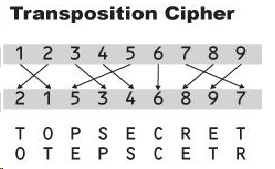

What is a classical ciphers.
Classical ciphers are type of ciphers used throughout the history to make text hard to read, for people that don’t know how to read them. Because of their simplicity in modern times and computer power, there no longer reliable and they have been replaced with new more sophisticated cyphers. For the full information on the topic please read the Wikipedia article here. Classical ciphers can be divided into two distinct types described next.
Substitution cipher. (SC)
Those are ciphers, created just by substituting one letter for another. Reversing the process reveals the real meaning of the text.
Transposition ciphers. (TC)
Those are cyphers that don't change the letter themselves but rather change their arrangement.
